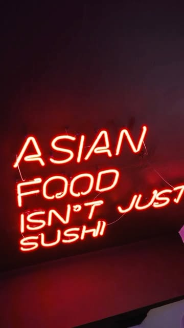
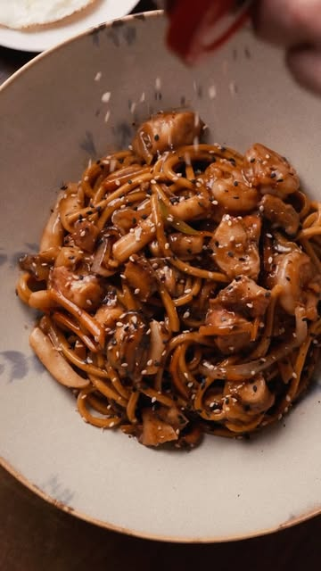
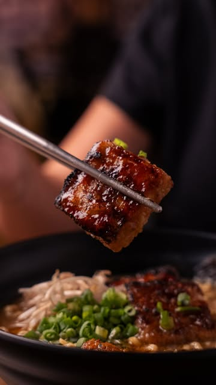
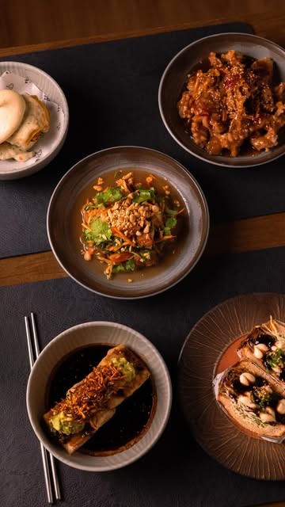

Izakaya, kitchen & bar em Fortaleza
Comida asiática não é só sushi.
Frango frito coreano, bibimbap, lámen e petiscos de vários países da Ásia, numa taverna intimista no Dionísio Torres.




Fotos: @manur.izakaya
Cardápio
Uma seleção do cardápio. Os pratos com pimenta são avisados, e vários têm versão vegana.
Pa-dak
O prato-chefe da casa: frango frito no estilo coreano, marinado no tempero secreto da dona Park, com cebolinha e espuma de ponzu.
Nasu furay vegetariano
Tiras de berinjela no shoyu e mirim, empanadas na palha de harumaki, com molho sour cream.
Katsu sando
Sanduíche japonês de copa lombo empanada, repolho, maionese e teriyaki da casa.
Yaki onigiri
Bolinho de arroz grelhado recheado com abadejo, ovas de tobiko e maionese de wasabi.
Tofu jorim vegano
Tofu cozido lentamente no shoyu, com abacate, crispy de cenoura e gergelim.
Pork sweet n' sour
Tiras de porco fritas no molho agridoce chinês, com legumes.
Bibimbap tem vegano
Bowl de arroz com legumes refogados, carne moída, ovo frito e gochujang. Misture antes de comer.
Missô lámen tem vegano
Caldo de porco e frango com missô, chashu, ovo marinado, moyashi e chilli oil.
Mee goreng de frutos do mar
Macarrão salteado com mexilhão, camarão, lula e polvo, ovo de gema mole e hoisin.
Salmon som tam
Salada tailandesa de mamão verde com salmão fresco, molho thai e amendoim.
O chef
O Manur é do chef Rafael Joo Young Kim, paulistano de família coreana, que aprendeu a cozinhar com a avó, dona Park, e depois estudou gastronomia.
A ideia é a de um izakaya, a taverna asiática: pratos para dividir, bebida gelada e sabores de vários países do continente, feitos com técnica e ingredientes orientais.
O tempero secreto da dona Park está no pa-dak, o prato-chefe da casa.
Visite
Rua Araken Silva, 113
Dionísio Torres, Fortaleza
WhatsApp: (85) 98960-6534. Não trabalhamos com reservas.